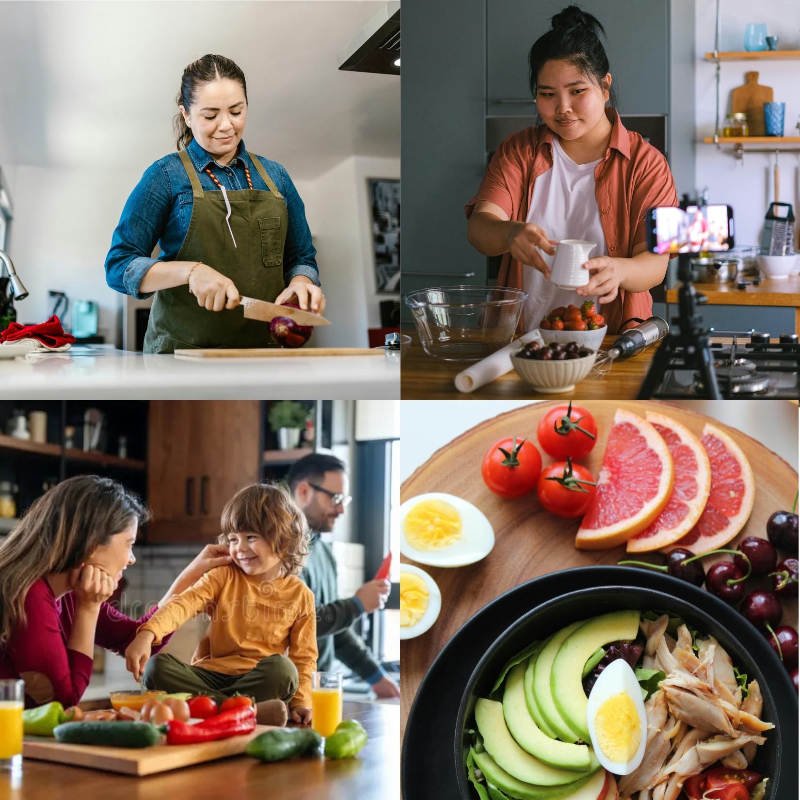

Ba tuần kể từ khi CookMate AR chính thức ra mắt, sản phẩm đã nhẹ nhàng bước vào hàng ngàn căn bếp — không ồn ã, nhưng đủ để khiến chúng tôi dừng lại và lắng nghe. Những bức ảnh gia đình nhoẻn miệng, clip người trẻ khoe “món đầu tay”, lời nhắn cảm ơn của phụ huynh xa nhà… Tất cả tạo nên một cảm xúc chung: bếp bỗng ấm hơn, nấu ăn bớt áp lực, niềm vui được trả về từng bữa ăn.
Trải nghiệm thực tế từ người dùng
Những câu chuyện chân thật chính là minh chứng rõ ràng nhất:
- “Mình không còn sợ nấu sai nữa. CookMate nhắc mình từng bước, nấu xong mà vẫn rảnh tay dọn bếp.” — An Nhiên, 26 tuổi
- “Là PT, mình cần bữa ăn đúng khẩu phần. CookMate giúp mình cân bằng dinh dưỡng và tiết kiệm thời gian.” — Trung, huấn luyện viên
- “Mẹ mình dùng rất nhanh; mẹ thích vì nhìn to, dễ hiểu. Từ ngày có CookMate, mẹ hay gọi video khoe món ăn hơn.” — Vy, sinh viên xa nhà
👉 Những trải nghiệm ấy cho thấy CookMate AR giải quyết đúng nỗi đau: nấu ăn không còn áp lực, mà trở thành niềm vui và sự kết nối.
Vì sao CookMate AR là xu hướng bền vững?
- Hướng dẫn AR trực quan: Hiểu ngay, làm đúng, hạn chế lãng phí.
- Voice guide thông minh: Tay bận vẫn nấu được, không lo cháy khét.
- Cá nhân hóa công thức: Ăn kiêng, eat clean, chay, tăng cơ… đều phù hợp.
- Tích hợp chia sẻ cộng đồng: Lưu công thức, remix, khoe thành phẩm.
- Thiết kế tinh tế: Tạp dề đơn sắc, tối giản, vừa hữu dụng vừa thời trang.
CookMate AR không chỉ là “app dạy nấu ăn”. Đó là một trải nghiệm công nghệ định hình thói quen mới trong căn bếp hiện đại.
Những tín hiệu từ cộng đồng
- Người dùng đăng clip “trước – sau” khi dùng CookMate AR.
- Các mâm cơm #CookMate xuất hiện ngày càng nhiều trên mạng xã hội.
- Từ phụ huynh, sinh viên đến creator, tất cả đều gọi tên CookMate khi nói về “giải pháp giúp tôi vào bếp dễ dàng”.
💡 Đây là bằng chứng CookMate AR đang trở thành thói quen bếp núc thông minh.
Chặng đường ba tuần vừa qua chỉ là khởi đầu. CookMate AR đã làm được điều mà chúng tôi mong muốn nhất: biến việc nấu ăn từ gánh nặng thành trải nghiệm truyền cảm hứng cho từng gia đình, từng bạn trẻ, từng người xa nhà.
Hãy để CookMate AR tiếp tục đồng hành cùng bạn trong hành trình nấu ăn thông minh.
Khám phá thêm công thức, trải nghiệm demo AR và đặt mua thử tại website chính thức để bắt đầu hành trình của riêng bạn.
#CookMateAR #CookTechVietNam #NauAnThongMinh #TapDeThongMinh